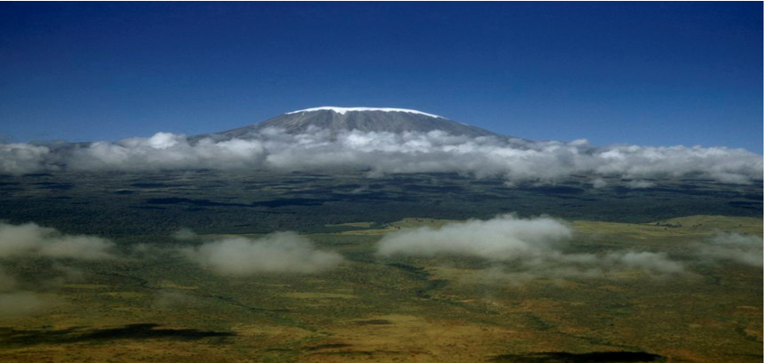

⇪
Located in Tanzania, Mount Kilimanjaro is Africa's tallest mountain at about 5,895 meters (19,340 feet). It is the largest free-standing mountain rise in the world, meaning it is not part of a mountain range.
Also called a stratovolcano (a term for a very large volcano made of ash, lava, and rock), Kilimanjaro is made up of three cones: Kibo, Mawenzi, and Shira. Kibo is the summit of the mountain and the tallest of the three volcanic formations. While Mawenzi and Shira are extinct, Kibo is dormant and could possibly erupt again. Scientists estimate that the last time it erupted was 360,000 years ago. The highest point on Kibo’s crater rim is called Uhuru, the Swahili word for “freedom.” The mountain is also known for its snow-capped peak; however, scientists warn that the snow might disappear within the next 20 years or so.
IMPORTANT UPDATE:
In 1889, German geographer Hans Meyer and Austrian mountaineer Ludwig Purtscheller became the first people on record to reach the summit of Kilimanjaro. Since then, Kilimanjaro has become a popular hiking spot for locals and tourists. Because mountaineering gear and experience is not needed to reach the peak, tens of thousands of climbers ascend the mountain each year. The climb is still dangerous, however, because of the risk of altitude sickness—a condition climbers experience if they ascend too quickly, which can be deadly if not treated right away.
In 1973, the mountain and its six surrounding forest corridors were named Kilimanjaro National Park in order to protect its unique environment. The park was named a United Nations Educational, Scientific and Cultural Organization (UNESCO) World Heritage site in 1987. A variety of animals live in the area surrounding the mountain, including the blue monkey (Cercopithecus mitis).